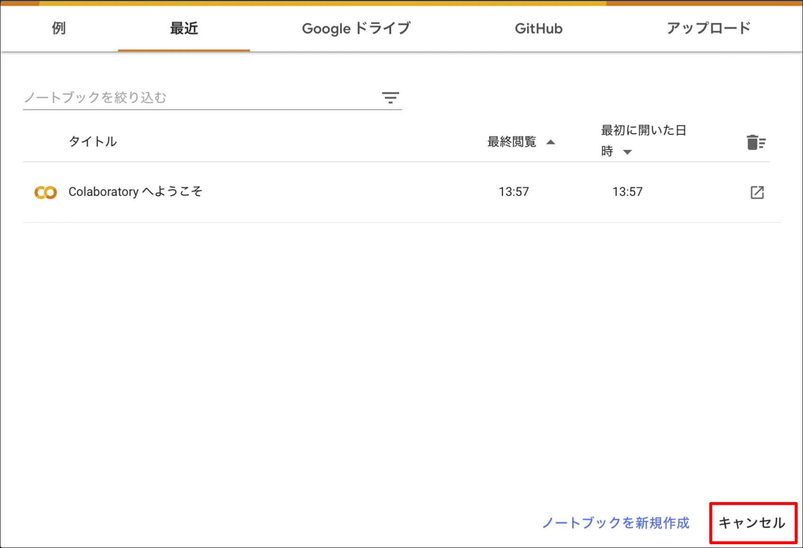
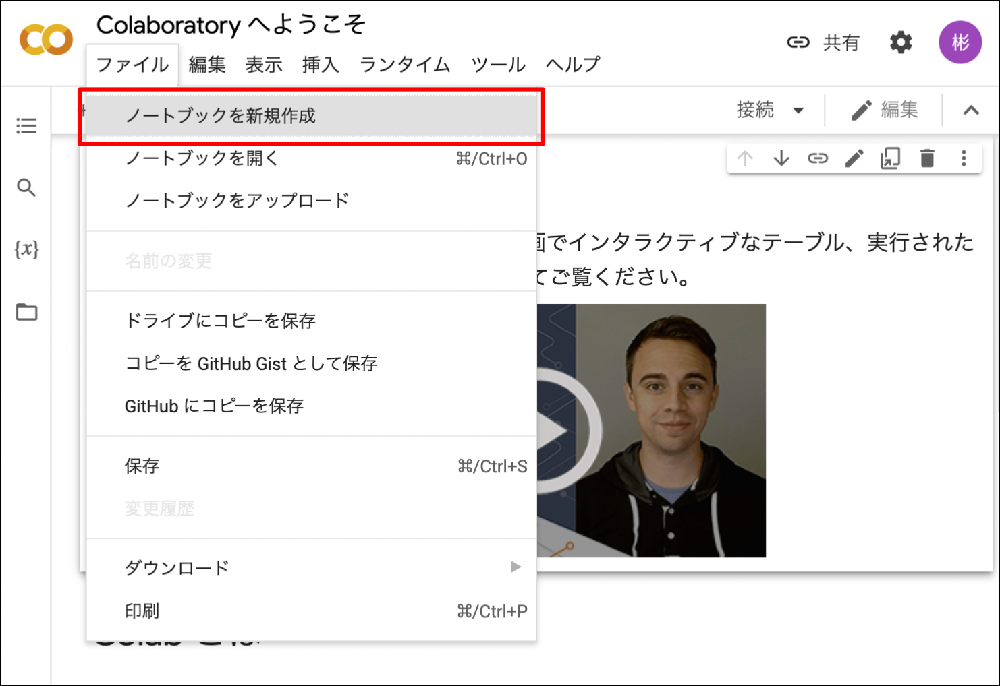
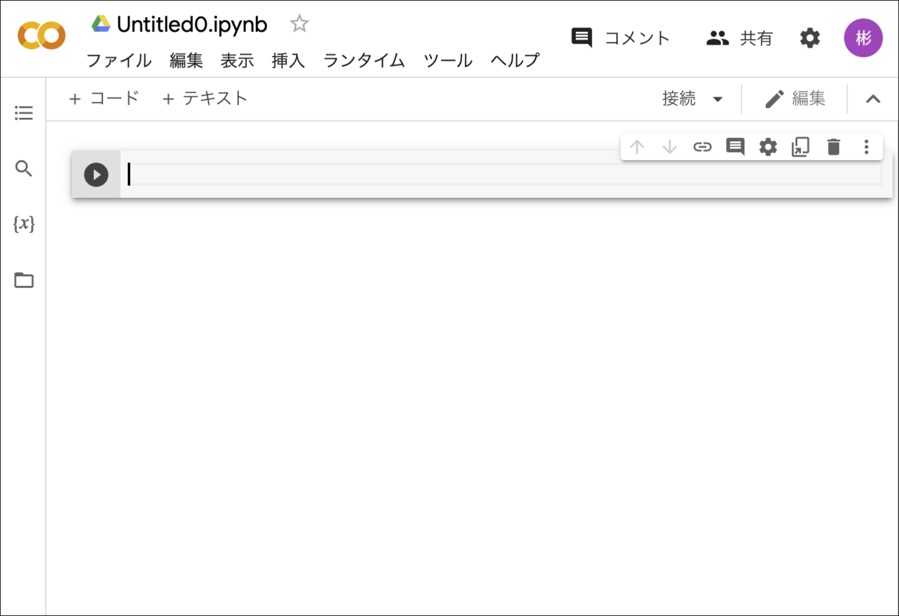
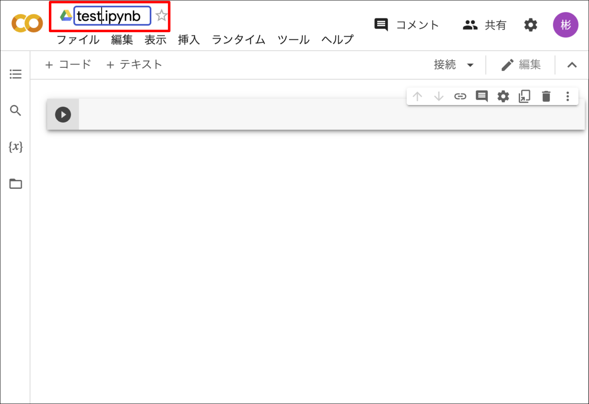
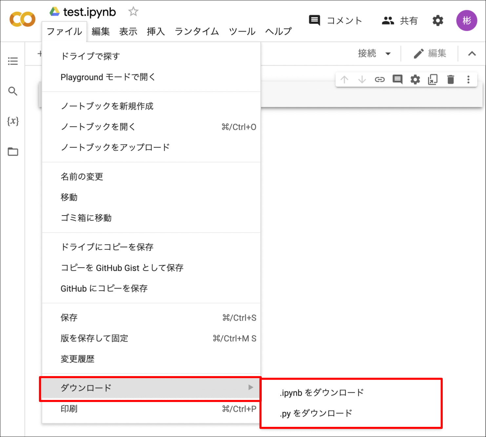
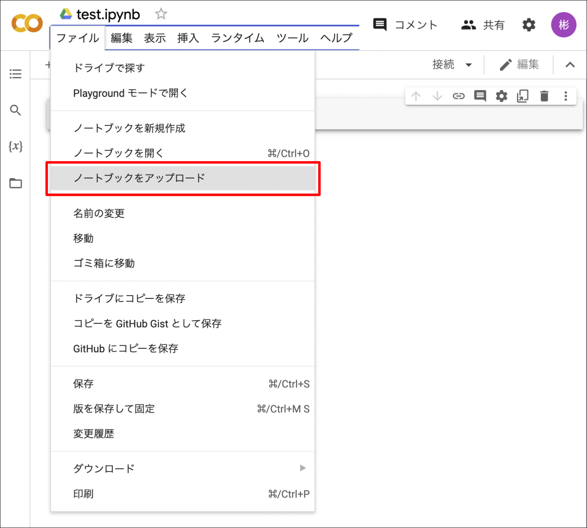
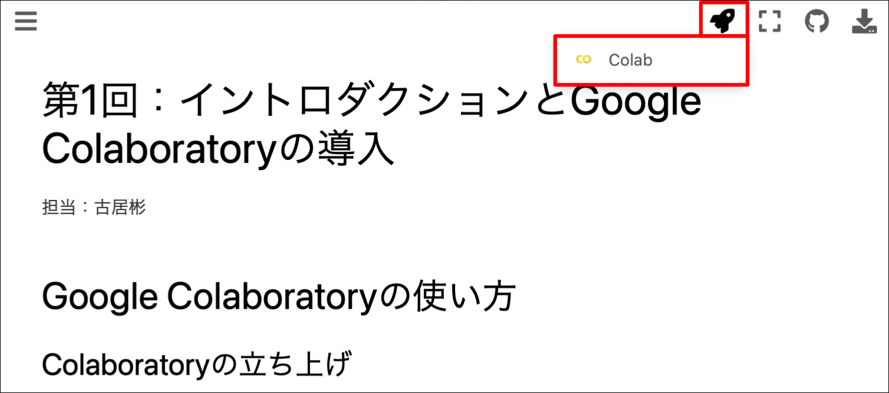
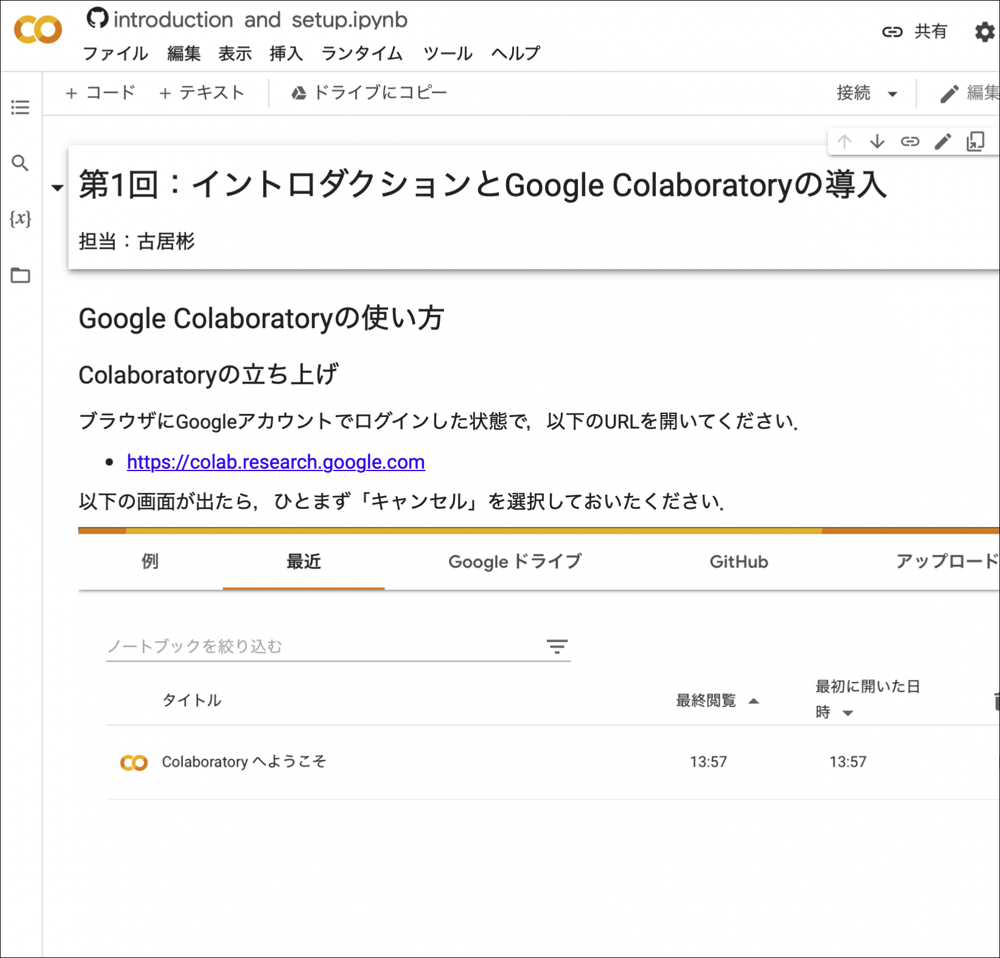
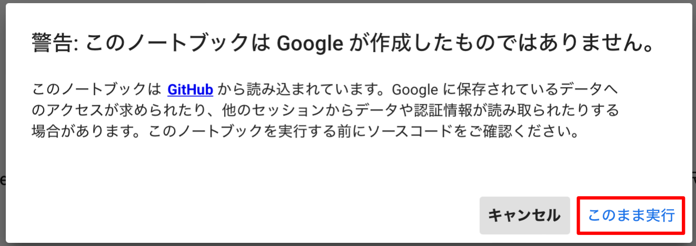
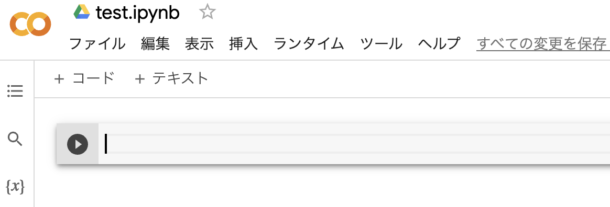

イントロダクションとGoogle Colaboratoryの導入#
担当：古居彬
Google Colaboratoryの使い方#
本講義では，Google Colabolatoryを用いてPythonによるプログラミングを学びます． Google Colabolatoryとは，その名の通りGoogleが提供するJupyter Notebook環境であり，クラウド上で実行できるため，ブラウザがあれば無料で利用することができます．
Googleアカウントを持っていない人は，あらかじめ作成しておきましょう．
Colaboratoryの立ち上げ#
ブラウザにGoogleアカウントでログインした状態で，以下のURLを開いてください．
以下の画面が出たら，ひとまず「キャンセル」を選択しておいたください．

ノートブックの作成方法#
空のノートブックを新たに作成するには，Colaboratoryのファイルメニューから「ノートブックを新規作成」を選択してください．

以下のように，Untitled0.ipynb という名前のノートブックが作成されます．

ノートブックの名前を変更するには，上側に表示されたタイトル部分をクリックすればOKです．
以下の例では，test.ipynb という名前に変更しています．

ノートブックの保存場所#
作成したノートブックは，Googleドライブ上に自動的に保存されます．
具体的には，Googleドライブの マイドライブ -> Colab Notebooks というフォルダ内になります．
Colaboratoryのファイルメニューから「ドライブで探す」をクリックすると，直接上記フォルダを開くことができます．
ノートブックのダウンロード#
作成したノートブックは自分のパソコン上にダウンロードすることができます．
Colaboratoryのファイルメニューで「ノートブックをダウンロード」を選択すればOKです．

ノートブックのアップロード#
自分のパソコン上のノートブックは，Colaboratoryのファイルメニューで「ノートブックをアップロード」を選択することでアップロードして開くことができます．

Google Colaboratoryを使った教材の開き方#
本講義で利用する教材は，サポートページから直接Colaboratoryで開くことができます．
実際に，このページをColaboratoryで開いてみましょう．
ページ上方にロケットのようなマークがあるので，それにマウスカーソルを合わせましょう． 「Colab」というメニューが表示されるので，それをクリックしてください．

すると，以下のようにGoogle Colaboratory上で本教材が開かれます．

Google Colaboratoryで開いた教材を用いることで，実際に教材中のプログラムを動かしたり，自分でちょっと書き換えたりすることができます．
なお，上記の手順で開いた教材ですが，ノートブックを操作した結果はGoogle Drive上に保存されません． ノートブックの上側にある「ドライブをコピー」というボタンを押せば，自分のGoogle Drive上にノートブックのコピーが作成されます．
ノートブックの操作#
ここからは，実際にGoogle Colaboratory上で本ノートブックを動かしながら進めましょう．
セル#
ノートブックはセルで構成されています．
主に，以下の二種類のセルを用います．
コードセル：Pythonのコードが書かれたセルです．コードセルの左側には
[ ]という表示があります．そこにマウスカーソルを持っていくと，再生ボタン▶︎が表示されます．コードセル内のコードを実行するには，この再生ボタン▶︎をクリックするか，対象のセルを選択した状態でキーボードのShiftを押しながらEnterを押します．テキストセル：説明が書かれたセルです．このセル自身はテキストセルです．
本講義では，主にコードセルを実行したり，自分でコードセルの内容を編集したりしながらプログラムを学習していきます．
なお，教材のセルを実行する際，以下のような警告が出るかもしれません．

その場合は，気にせず「そのまま実行」をクリックしてください．
セルの実行#
それでは早速セルを実行してみましょう．
次のコードセル内にマウスカーソルを移動しクリックすると，コードセルが選択されます．
その状態でセル左側の再生ボタン ▶︎ をクリックするか，Shiftを押しながらEnterを押してみてください．
print('Hello World!')
Hello World!
コードセルの下に，「Hello World!」という文字列表示されたと思います． このように，実行したセルの下側にはそのセル内で実行した処理の結果が表示されます．
ちなみに，上記の print()は，文字列を画面上に出力するための命令を与えるものです．
print('出力したい文字列')
と書くことで，他の文字列も表示することができます．
なお，出力したい文字列の前後を シングルクォーテーション（'）または ダブルクォーテーション（"）で囲うことに注意しましょう．
練習#
では，少し練習してみましょう． 次のコードセルを選択して，先ほど実行した例を参考に「Hello Python!」という文字列が出力されるようなコードを書いてみてください．
print('Hello Python!')
Hello Python!
うまく動いたでしょうか？ このようにセルにコードを書いたり，編集したりしながらプログラムを実行していきます．
簡単な算術計算#
さて，文字列を表示する以外の例として，算術計算もやってみましょう．
コードセル内に計算式を記入して実行すると，電卓のようにその計算結果が出力されます．
例えば足し算の例として，以下のセルに 1 + 1 と入力し，実行してみてください．
1 + 1
2
1 + 1 の結果である 2 が出力されたかと思います．
足し算以外にも一般的な四則演算として引き算 -，掛け算 *，割り算 / などが用意されています．
それぞれやってみましょう．
次のセルに 45 - 12 と入力して実行してください．
45 - 12
33
次のセルに 12 * 10 と入力して実行してください．
12 * 10
120
次のセルに 10 / 3 と入力して実行してください．
10 / 3
3.3333333333333335
// を使うと余りが切り捨てられ，整数値が得られます．
17 // 3
5
余り（剰余）は % で計算できます．例：17を3で割ると2余る
17 % 3
2
べき乗の計算は ** で実行できます．例：\(2^{10} = 1024\)
2**10
1024
複数の計算はまとめることができます．
10 + 2 * 100 / 3.14
73.69426751592357
数式の計算と同じように計算には優先順序があり，括弧 ( ) を使うことで優先的に計算されます．
10 * (2 - 3) / 2
-5.0
せっかくですので，上記数式の中の数字を色々変えてみて，実際に計算結果が変わることを確かめてみてください．
セルの追加#
コードセルを新たに挿入するには，上側のメニューバーの「+ コード」ボタンをクリックします．

現在選択されているセルの下にコードセルが新たに追加されます．
試しに，↓のセルを選択した状態で，「+ コード」ボタンをクリックしてみてください．
# このコードセルを選択した状態で，「+ コード」ボタンをクリックする
空のコードセルが追加されたかと思います．
同様に，テキストセルを追加したい場合は，同じメニューバーの「+ テキスト」をクリックすればOKです．
セルの操作#
セルを選択すると，セルの右上に色々なボタンが表示されます．
これらをクリックすることで，セルの移動やコピー，削除などさまざまな操作を行うことができます．
コメント#
Pythonでは，コード中に # が記載してあると，それ以降，その行の終わりまでが コメント として扱われます．
コメントの部分はプログラム実行時には無視されるため，コードに関する補足説明などを記載するときに利用されます．
# このように行頭に `#` を書くことで，その行全体がコメントとなる．
10 / 5 # このように行の途中からコメントを書くこともできる
2.0
# 以下のようにコード行にコメントを付け，その部分を無視させることもよく行われる．
# 10 / 5
10 / 2 # こちらのみ実行される
5.0
今後，コード中に補足説明などを示す場合にコメントが登場するので，注意しておきましょう． なお，コメントの部分は色も変わるので，実行されるコード部分との違いは比較的分かりやすいかと思います．